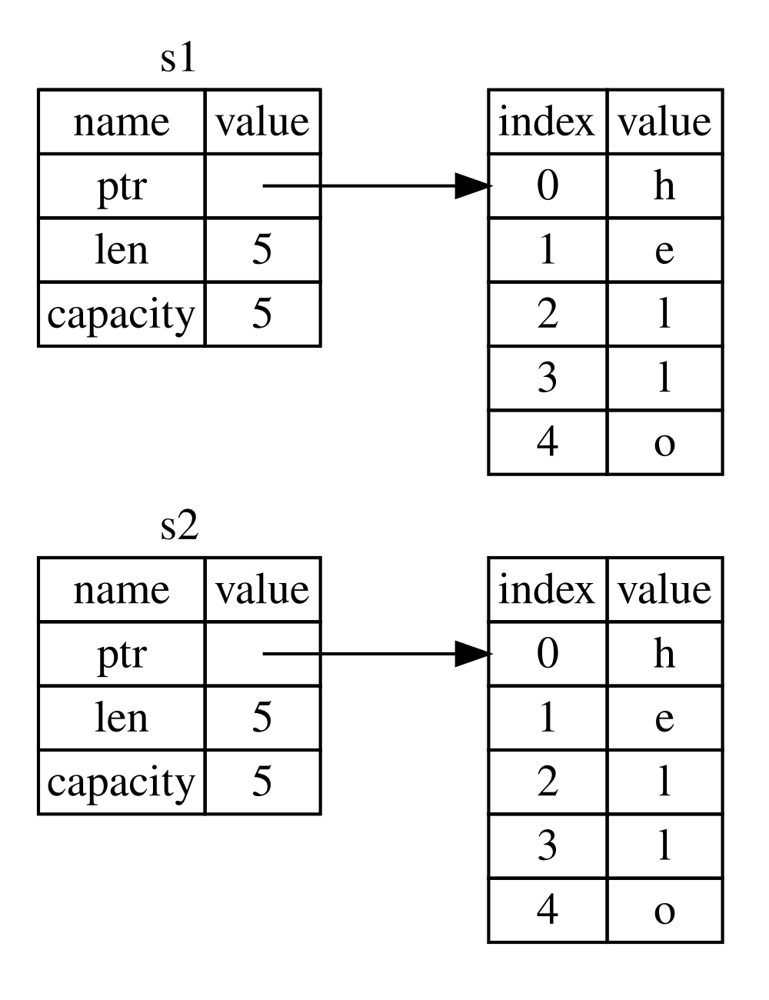

Apa Itu Ownership?
Ownership adalah kumpulan aturan yang mengatur cara program Rust mengelola memori. Semua program harus mengelola cara mereka memakai memori komputer saat berjalan. Beberapa bahasa punya garbage collector yang secara rutin mencari memori yang sudah tidak terpakai selama program berjalan; di bahasa lain, programmer harus mengalokasikan dan membebaskan memori secara eksplisit. Rust memakai pendekatan ketiga: memori dikelola melalui sistem ownership dengan seperangkat aturan yang diperiksa compiler. Jika ada aturan yang dilanggar, program tidak akan terkompilasi. Tidak ada fitur ownership yang akan memperlambat program kamu saat dijalankan.
Karena ownership adalah konsep baru bagi banyak programmer, memang butuh waktu untuk membiasakan diri. Kabar baiknya, makin lama kamu mahir dengan Rust dan aturan sistem ownership, makin mudah kamu menulis kode yang aman dan efisien secara alami. Terus berlatih!
Setelah kamu paham ownership, kamu akan punya dasar yang kuat untuk memahami fitur-fitur yang membuat Rust unik. Di bab ini, kamu akan belajar ownership lewat beberapa contoh yang berfokus pada struktur data yang sangat umum: string.
Stack dan Heap
Banyak bahasa pemrograman tidak menuntut kamu memikirkan stack dan heap terlalu sering. Tapi di bahasa pemrograman sistem seperti Rust, apakah sebuah nilai berada di stack atau heap memengaruhi cara bahasa itu berperilaku dan alasan kamu harus mengambil keputusan tertentu. Beberapa bagian ownership akan dijelaskan berkaitan dengan stack dan heap di bagian akhir bab ini, jadi berikut penjelasan singkat sebagai bekal.
Stack dan heap sama-sama bagian memori yang bisa dipakai kode kamu saat runtime, tapi keduanya disusun dengan cara berbeda. Stack menyimpan nilai sesuai urutan diterimanya dan menghapus nilai dengan urutan terbalik. Ini disebut last in, first out (LIFO), atau masuk terakhir, keluar pertama. Bayangkan tumpukan piring: saat kamu menambah piring, kamu meletakkannya di atas tumpukan, dan saat butuh piring, kamu mengambilnya dari puncak. Menambah atau mengambil piring dari tengah atau bawah tumpukan tidak akan praktis! Menambah data disebut pushing onto the stack, dan menghapus data disebut popping off the stack. Semua data yang disimpan di stack harus berukuran tetap dan diketahui. Data yang ukurannya tidak diketahui saat kompilasi atau bisa berubah harus disimpan di heap.
Heap lebih tidak teratur: saat kamu menaruh data di heap, kamu meminta sejumlah ruang. Alokator memori menemukan ruang kosong di heap yang cukup besar, menandainya sedang dipakai, lalu mengembalikan sebuah pointer, yaitu alamat lokasi tersebut. Proses ini disebut allocating on the heap dan kadang disingkat hanya allocating (mendorong nilai ke stack tidak dianggap mengalokasikan). Karena pointer ke heap berukuran tetap dan diketahui, kamu bisa menyimpan pointer itu di stack; tapi saat kamu ingin data yang sebenarnya, kamu harus mengikuti pointer itu. Bayangkan kamu sedang duduk di restoran. Saat masuk, kamu menyebut berapa orang di rombonganmu, lalu petugas meja menemukan meja kosong yang muat untuk semuanya dan mengantar kalian ke sana. Jika ada anggota rombonganmu yang datang terlambat, dia bisa bertanya di mana kalian duduk untuk menemukanmu.
Mendorong ke stack lebih cepat daripada mengalokasikan di heap karena alokator tidak perlu mencari tempat menyimpan data baru; lokasinya selalu di puncak stack. Sebaliknya, mengalokasikan ruang di heap butuh lebih banyak kerja karena alokator harus lebih dulu menemukan ruang yang cukup besar untuk menampung data, lalu melakukan pencatatan agar alokasi berikutnya siap.
Mengakses data di heap umumnya lebih lambat daripada mengakses data di stack karena kamu harus mengikuti pointer untuk mencapainya. Prosesor modern lebih cepat jika melompat-lompat di memori lebih sedikit. Menjawaskan analogi tersebut, bayangkan seorang pelayan di restoran mencatat pesanan dari banyak meja. Paling efisien mengambil semua pesanan di satu meja dulu sebelum pindah ke meja berikutnya. Mengambil pesanan dari meja A, lalu meja B, lalu A lagi, lalu B lagi akan jauh lebih lambat. Dengan logika yang sama, prosesor biasanya bekerja lebih baik jika memproses data yang berdekatan dengan data lain (seperti di stack) ketimbang yang jauh (seperti bisa terjadi di heap).
Saat kode kamu memanggil sebuah fungsi, nilai yang diteruskan ke fungsi itu (termasuk, bisa jadi, pointer ke data di heap) dan variabel lokal fungsi akan didorong ke stack. Setelah fungsi selesai, nilai-nilai itu dikeluarkan dari stack.
Melacak bagian kode mana yang memakai data apa di heap, meminimalkan jumlah data duplikat di heap, dan membersihkan data yang tidak terpakai di heap supaya ruangmu tidak habis—semua itu adalah masalah yang diatasi oleh ownership. Setelah kamu paham ownership, kamu tidak akan terlalu sering memikirkan stack dan heap. Tapi mengetahui bahwa tujuan utama ownership adalah mengelola data heap bisa membantu menjelaskan mengapa ia bekerja sebagaimana ia bekerja.
Aturan Ownership
Pertama, mari kita lihat aturan ownership. Ingatlah aturan-aturan ini sambil kita menelaah contoh-contoh yang menggamparkannya:
- Setiap nilai di Rust memiliki owner (pemilik).
- Pada satu waktu, hanya boleh ada satu owner.
- Saat owner keluar dari scope, nilai itu akan di-drop.
Scope Variabel
Karena kita sudah melampaui sintaks dasar Rust, kita tidak akan menyertakan
seluruh kode fn main() { pada contoh, jadi kalau kamu mengikuti, pastikan
memasukkan contoh-contoh berikut ke dalam fungsi main secara manual. Dengan
begitu, contoh kita jadi lebih ringkas, sehingga kita fokus pada detail yang
sebenarnya, bukan kode boilerplate.
Sebagai contoh pertama tentang ownership, kita akan melihat scope dari beberapa variabel. Scope adalah rentang di dalam program tempat sebuah item berlaku. Perhatikan variabel berikut:
#![allow(unused)]
fn main() {
let s = "hello";
}Variabel s merujuk ke string literal, yaitu string yang nilainya di-hardcode
ke dalam teks program kita. Variabel itu berlaku sejak titik deklarasinya sampai
akhir scope saat ini. Listing 4-1 menunjukkan sebuah program dengan komentar
yang menandai di mana variabel s berlaku.
fn main() {
{ // s is not valid here, since it's not yet declared
let s = "hello"; // s is valid from this point forward
// do stuff with s
} // this scope is now over, and s is no longer valid
}Dengan kata lain, ada dua momen penting di sini:
- Saat
smasuk scope, ia berlaku. - Ia tetap berlaku sampai keluar dari scope.
Sampai di sini, hubungan antara scope dan masa berlaku variabel sama saja
dengan bahasa pemrograman lain. Sekarang kita bangun di atas pemahaman itu
dengan memperkenalkan tipe String.
Tipe String
Untuk menggambarkan aturan ownership, kita butuh tipe data yang lebih kompleks
daripada yang sudah kita bahas di bagian “Tipe Data”
di Bab 3. Tipe-tipe yang sudah dibahas berukuran tetap dan diketahui, bisa
disimpan di stack lalu dikeluarkan dari stack saat scope-nya selesai, dan bisa
disalin dengan cepat serta mudah untuk membuat instance baru yang independen
jika bagian kode lain perlu memakai nilai yang sama di scope berbeda. Tapi kita
ingin melihat data yang disimpan di heap dan menelusuri bagaimana Rust tahu
kapan harus membersihkan data itu, dan tipe String adalah contoh yang tepat.
Kita akan fokus pada bagian String yang berkaitan dengan ownership. Aspek-aspek
ini juga berlaku untuk tipe data kompleks lain, baik yang disediakan standard
library maupun yang kamu buat sendiri. Kita akan membahas aspek String yang
bukan soal ownership di Bab 8.
Kita sudah melihat string literal, yaitu nilai string yang di-hardcode ke dalam
program kita. String literal praktis, tapi tidak cocok untuk setiap situasi
tempat kita ingin memakai teks. Salah satu alasannya, string literal itu
immutable. Alasan lain, tidak semua nilai string bisa kita ketahui saat menulis
kode: misalnya, bagaimana kalau kita ingin menerima input pengguna lalu
menyimpannya? Untuk situasi seperti itulah Rust menyediakan tipe String. Tipe
ini mengelola data yang dialokasikan di heap sehingga mampu menyimpan jumlah teks
yang tidak kita ketahui saat kompilasi. Kamu bisa membuat String dari string
literal memakai fungsi from, seperti ini:
#![allow(unused)]
fn main() {
let s = String::from("hello");
}Operator dua titik dua :: memungkinkan kita menempatkan fungsi from ini di
dalam namespace tipe String, alih-alih memakai semacam nama seperti
string_from. Sintaks ini akan kita bahas lebih lanjut di bagian
“Method” di Bab 5, serta saat kita membahas
namespace bersama module di “Path untuk Merujuk ke Item di Pohon
Module” di Bab 7.
String seperti ini bisa dimutasi:
fn main() {
let mut s = String::from("hello");
s.push_str(", world!"); // push_str() appends a literal to a String
println!("{s}"); // this will print `hello, world!`
}Lalu, apa bedanya? Kenapa String bisa dimutasi tapi literal tidak? Bedanya
terletak pada cara kedua tipe ini menangani memori.
Memori dan Alokasi
Pada string literal, kita tahu isinya sejak saat kompilasi, jadi teksnya di-hardcode langsung ke executable final. Itulah sebabnya string literal cepat dan efisien. Tapi sifat itu hanya berasal dari sifat immutable string literal. Sayangnya, kita tidak bisa menaruh segumpal memori ke dalam binary untuk setiap potongan teks yang ukurannya tidak diketahui saat kompilasi dan bisa berubah selama program berjalan.
Dengan tipe String, untuk menopang teks yang mutable dan bisa bertambah, kita
perlu mengalokasikan sejumlah memori di heap—yang tidak diketahui saat
kompilasi—untuk menampung isinya. Artinya:
- Memori harus diminta dari alokator memori saat runtime.
- Kita butuh cara mengembalikan memori ini ke alokator setelah selesai memakai
Stringkita.
Bagian pertama dilakukan oleh kita: saat kita memanggil String::from,
implementasinya meminta memori yang dibutuhkannya. Hal ini berlaku di hampir
semua bahasa pemrograman.
Namun, bagian kedua berbeda. Di bahasa yang memiliki garbage collector (GC),
GC melacak dan membersihkan memori yang sudah tidak terpakai, dan kita tidak
perlu memikirkannya. Di sebagian besar bahasa tanpa GC, kitalah yang bertanggung
jawab menandai kapan memori sudah tidak dipakai lalu memanggil kode untuk
membebaskannya secara eksplisit, sama seperti saat kita memintanya.
Melakukannya dengan benar secara historis adalah masalah pemrograman yang sulit.
Jika kita lupa, memori terbuang. Jika terlalu cepat, kita dapat variabel yang
tidak valid. Jika melakukannya dua kali, itu juga bug. Kita harus memasangkan
tepat satu allocate dengan tepat satu free.
Rust menempuh jalan lain: memori dikembalikan secara otomatis begitu variabel
pemiliknya keluar dari scope. Berikut versi contoh scope kita dari Listing 4-1
yang memakai String alih-alih string literal:
fn main() {
{
let s = String::from("hello"); // s is valid from this point forward
// do stuff with s
} // this scope is now over, and s is no
// longer valid
}Ada titik alami tempat kita bisa mengembalikan memori yang dibutuhkan String
kita ke alokator: saat s keluar dari scope. Ketika sebuah variabel keluar
dari scope, Rust memanggil fungsi khusus untuk kita. Fungsi itu bernama drop,
dan di sanalah penulis String bisa menaruh kode untuk mengembalikan memori.
Rust memanggil drop secara otomatis di kurung kurawal penutup.
Catatan: Di C++, pola melepas resource di akhir lifetime sebuah item ini kadang disebut Resource Acquisition Is Initialization (RAII). Fungsi
dropdi Rust akan terasa familiar bagimu jika kamu sudah memakai pola RAII.
Pola ini berdampak besar pada cara kode Rust ditulis. Sekarang mungkin terlihat sederhana, tapi perilaku kode bisa tak terduga pada situasi yang lebih rumit ketika kita ingin beberapa variabel memakai data yang kita alokasikan di heap. Mari kita telusuri beberapa situasi itu sekarang.
Variabel dan Data yang Berinteraksi dengan Move
Beberapa variabel bisa berinteraksi dengan data yang sama dengan cara berbeda di Rust. Listing 4-2 menunjukkan contoh yang memakai integer.
fn main() {
let x = 5;
let y = x;
}x ke yKita mungkin bisa menebak apa yang dilakukan kode ini: “Ikat nilai 5 ke x;
lalu, salin nilai di x dan ikatkan ke y.” Sekarang kita punya dua variabel,
x dan y, dan keduanya bernilai 5. Memang begitu yang terjadi, karena
integer adalah nilai sederhana berukuran tetap yang diketahui, dan dua nilai
5 itu didorong ke stack.
Sekarang mari lihat versi String:
fn main() {
let s1 = String::from("hello");
let s2 = s1;
}Tampilannya sangat mirip, jadi kita mungkin mengira cara kerjanya sama: baris
kedua akan menyalin nilai di s1 lalu mengikatnya ke s2. Tapi bukan begitu
yang sebenarnya terjadi.
Perhatikan Gambar 4-1 untuk melihat apa yang terjadi pada String di balik
layar. String terdiri atas tiga bagian, ditampilkan di sebelah kiri: pointer
ke memori yang menampung isi string, sebuah length, dan sebuah capacity.
Kelompok data ini disimpan di stack. Di sebelah kanan adalah memori di heap
yang menampung isinya.

Gambar 4-1: Representasi dalam memori sebuah String
yang memegang nilai "hello" yang terikat ke s1
Length adalah seberapa banyak memori, dalam byte, yang saat ini dipakai isi
String itu. Capacity adalah total memori, dalam byte, yang diterima String
dari alokator. Perbedaan antara length dan capacity itu penting, tapi bukan
dalam konteks ini, jadi untuk sekarang abaikan saja capacity-nya.
Saat kita menugaskan s1 ke s2, data String disalin, artinya kita menyalin
pointer, length, dan capacity yang ada di stack. Kita tidak menyalin data di
heap yang dirujuk pointer itu. Dengan kata lain, representasi data dalam memori
tampak seperti Gambar 4-2.

Gambar 4-2: Representasi dalam memori variabel s2 yang
memiliki salinan pointer, length, dan capacity dari s1
Representasinya bukan seperti Gambar 4-3, yang merupakan tampilan memori jika
Rust justru menyalin data heap juga. Jika Rust melakukan itu, operasi
s2 = s1 bisa sangat mahal dari sisi performa runtime jika data di heap besar.

Gambar 4-3: Kemungkinan lain tentang apa yang dilakukan
s2 = s1 jika Rust juga menyalin data heap
Tadi kita sudah bilang, saat variabel keluar dari scope, Rust otomatis memanggil
fungsi drop dan membersihkan memori heap untuk variabel itu. Tapi Gambar 4-2
menunjukkan kedua pointer data menunjuk ke lokasi yang sama. Ini masalah: saat
s2 dan s1 keluar dari scope, keduanya akan berusaha membebaskan memori yang
sama. Ini dikenal sebagai error double free dan merupakan salah satu bug
keamanan memori yang kita sebut sebelumnya. Membebaskan memori dua kali bisa
menyebabkan korupsi memori, yang berpotensi menimbulkan kerentanan keamanan.
Untuk menjaga keamanan memori, setelah baris let s2 = s1;, Rust menganggap
s1 tidak lagi valid. Karena itu, Rust tidak perlu membebaskan apa pun saat
s1 keluar dari scope. Coba lihat apa yang terjadi saat kamu mencoba memakai
s1 setelah s2 dibuat; tidak akan jalan:
fn main() {
let s1 = String::from("hello");
let s2 = s1;
println!("{s1}, world!");
}Kamu akan mendapat error seperti ini karena Rust melarang kamu memakai reference yang sudah tidak valid:
$ cargo run
Compiling ownership v0.1.0 (file:///projects/ownership)
error[E0382]: borrow of moved value: `s1`
--> src/main.rs:5:16
|
2 | let s1 = String::from("hello");
| -- move occurs because `s1` has type `String`, which does not implement the `Copy` trait
3 | let s2 = s1;
| -- value moved here
4 |
5 | println!("{s1}, world!");
| ^^ value borrowed here after move
|
help: consider cloning the value if the performance cost is acceptable
|
3 | let s2 = s1.clone();
| ++++++++
For more information about this error, try `rustc --explain E0382`.
error: could not compile `ownership` (bin "ownership") due to 1 previous error
Jika kamu pernah mendengar istilah shallow copy dan deep copy saat bekerja
dengan bahasa lain, konsep menyalin pointer, length, dan capacity tanpa menyalin
data mungkin terdengar seperti membuat shallow copy. Tapi karena Rust juga
meniadakan variabel pertama, alih-alih disebut shallow copy, hal ini dikenal
sebagai move. Pada contoh ini, kita akan bilang s1 telah di-move ke s2.
Jadi, yang benar-benar terjadi ditampilkan di Gambar 4-4.

Gambar 4-4: Representasi dalam memori setelah s1
dinonaktifkan
Masalah kita selesai! Dengan hanya s2 yang valid, saat keluar dari scope
hanya dialah yang membebaskan memori, dan tugas pun selesai.
Selain itu, ada pilihan desain yang tersirat dari hal ini: Rust tidak akan pernah membuat salinan “dalam” dari data kamu secara otomatis. Karena itu, penyalinan otomatis apa pun bisa diasumsikan murah dari sisi performa runtime.
Scope dan Penugasan
Hal sebaliknya juga berlaku untuk hubungan antara scope, ownership, dan
pembebasan memori lewat fungsi drop. Saat kamu menugaskan nilai yang sama
sekali baru ke variabel yang sudah ada, Rust akan memanggil drop dan langsung
membebaskan memori nilai semula. Sebagai contoh, perhatikan kode ini:
fn main() {
let mut s = String::from("hello");
s = String::from("ahoy");
println!("{s}, world!");
}Awalnya kita deklarasikan variabel s dan mengikatnya ke String dengan nilai
"hello". Lalu, kita segera membuat String baru dengan nilai "ahoy" dan
menugaskannya ke s. Saat ini, tidak ada lagi yang merujuk nilai asli di heap.
Gambar 4-5 mengilustrasikan data stack dan heap saat ini:

Gambar 4-5: Representasi dalam memori setelah nilai awal diganti sepenuhnya
String asli itu pun segera keluar dari scope. Rust akan menjalankan fungsi drop
padanya dan memorinya langsung dibebaskan. Saat kita mencetak nilai di akhir,
hasilnya adalah "ahoy, world!".
Variabel dan Data yang Berinteraksi dengan Clone
Jika kita memang ingin menyalin data heap String secara mendalam, bukan
hanya data stack, kita bisa memakai method yang umum bernama clone. Kita akan
membahas sintaks method di Bab 5, tapi karena method adalah fitur yang umum di
banyak bahasa pemrograman, kamu mungkin sudah melihatnya sebelumnya.
Berikut contoh method clone dalam aksi:
fn main() {
let s1 = String::from("hello");
let s2 = s1.clone();
println!("s1 = {s1}, s2 = {s2}");
}Cara ini bekerja dengan baik dan secara eksplisit menghasilkan perilaku yang ditampilkan di Gambar 4-3, di mana data heap memang disalin.
Saat kamu melihat pemanggilan clone, kamu tahu ada kode sembarang yang
dijalankan dan kode itu bisa mahal. Itu penanda visual bahwa ada yang berbeda
sedang terjadi.
Data yang Hanya di Stack: Copy
Masih ada satu hal lagi yang belum kita bicarakan. Kode berikut yang memakai integer—sebagiannya ditampilkan di Listing 4-2—bekerja dan valid:
fn main() {
let x = 5;
let y = x;
println!("x = {x}, y = {y}");
}Tapi kode ini sepertinya bertentangan dengan yang baru kita pelajari: kita tidak
memanggil clone, tapi x tetap valid dan tidak di-move ke y.
Alasannya, tipe seperti integer yang ukurannya diketahui saat kompilasi
disimpan seluruhnya di stack, sehingga menyalin nilai yang sebenarnya bisa
dilakukan dengan cepat. Artinya, tidak ada alasan untuk membuat x tidak valid
setelah kita membuat variabel y. Dengan kata lain, tidak ada bedanya antara
penyalinan mendalam dan dangkal di sini, jadi memanggil clone tidak akan
berbeda dari penyalinan dangkal biasa, dan kita bisa menghilangkannya.
Rust punya anotasi khusus bernama trait Copy yang bisa kita berikan pada tipe
yang disimpan di stack, seperti integer (kita akan membahas trait lebih lanjut
di Bab 10). Jika sebuah tipe mengimplementasikan trait
Copy, variabel yang menggunakannya tidak di-move, melainkan disalin begitu
saja, sehingga tetap valid setelah ditugaskan ke variabel lain.
Rust tidak akan membiarkan kita memberi anotasi Copy pada tipe yang, atau
bagian mana pun dari tipe itu, sudah mengimplementasikan trait Drop. Jika
tipe itu membutuhkan perlakuan khusus saat nilai keluar dari scope dan kita
menambahkan anotasi Copy pada tipe tersebut, kita akan dapat error waktu
kompilasi. Untuk mempelajari cara menambahkan anotasi Copy pada tipe kamu
agar mengimplementasikan trait itu, lihat
“Trait yang Bisa Diturunkan” di Lampiran C.
Jadi, tipe mana yang mengimplementasikan trait Copy? Kamu bisa memeriksa
dokumentasi tipe terkait untuk memastikannya, tapi sebagai aturan umum,
sekumpulan nilai skalar sederhana bisa mengimplementasikan Copy, sedangkan
apa pun yang membutuhkan alokasi atau berupa resource tidak bisa
mengimplementasikan Copy. Berikut beberapa tipe yang mengimplementasikan
Copy:
- Semua tipe integer, seperti
u32. - Tipe Boolean,
bool, dengan nilaitruedanfalse. - Semua tipe floating-point, seperti
f64. - Tipe karakter,
char. - Tuple, jika hanya berisi tipe yang juga mengimplementasikan
Copy. Sebagai contoh,(i32, i32)mengimplementasikanCopy, sedangkan(i32, String)tidak.
Ownership dan Fungsi
Mekanisme meneruskan nilai ke sebuah fungsi mirip dengan saat menugaskan nilai ke variabel. Meneruskan variabel ke fungsi akan meng-move atau menyalin, sama seperti penugasan. Listing 4-3 berisi contoh dengan beberapa anotasi yang menunjukkan di mana variabel masuk dan keluar dari scope.
fn main() {
let s = String::from("hello"); // s comes into scope
takes_ownership(s); // s's value moves into the function...
// ... and so is no longer valid here
let x = 5; // x comes into scope
makes_copy(x); // Because i32 implements the Copy trait,
// x does NOT move into the function,
// so it's okay to use x afterward.
} // Here, x goes out of scope, then s. However, because s's value was moved,
// nothing special happens.
fn takes_ownership(some_string: String) { // some_string comes into scope
println!("{some_string}");
} // Here, some_string goes out of scope and `drop` is called. The backing
// memory is freed.
fn makes_copy(some_integer: i32) { // some_integer comes into scope
println!("{some_integer}");
} // Here, some_integer goes out of scope. Nothing special happens.Jika kita mencoba memakai s setelah pemanggilan takes_ownership, Rust akan
melempar error waktu kompilasi. Pemeriksaan statis ini melindungi kita dari
kesalahan. Coba tambahkan kode di main yang memakai s dan x untuk melihat
di mana kamu bisa memakainya dan di mana aturan ownership melarangnya.
Nilai Kembalian dan Scope
Mengembalikan nilai juga bisa memindahkan ownership. Listing 4-4 menunjukkan contoh fungsi yang mengembalikan suatu nilai, dengan anotasi serupa seperti di Listing 4-3.
fn main() {
let s1 = gives_ownership(); // gives_ownership moves its return
// value into s1
let s2 = String::from("hello"); // s2 comes into scope
let s3 = takes_and_gives_back(s2); // s2 is moved into
// takes_and_gives_back, which also
// moves its return value into s3
} // Here, s3 goes out of scope and is dropped. s2 was moved, so nothing
// happens. s1 goes out of scope and is dropped.
fn gives_ownership() -> String { // gives_ownership will move its
// return value into the function
// that calls it
let some_string = String::from("yours"); // some_string comes into scope
some_string // some_string is returned and
// moves out to the calling
// function
}
// This function takes a String and returns a String.
fn takes_and_gives_back(a_string: String) -> String {
// a_string comes into
// scope
a_string // a_string is returned and moves out to the calling function
}Ownership sebuah variabel selalu mengikuti pola yang sama: menugaskan nilai ke
variabel lain akan meng-move nilai itu. Saat variabel yang memuat data di heap
keluar dari scope, nilai itu akan dibersihkan oleh drop kecuali ownership
data sudah dipindahkan ke variabel lain.
Meski cara ini bekerja, mengambil ownership lalu mengembalikannya di setiap fungsi terasa merepotkan. Bagaimana kalau kita ingin membiarkan sebuah fungsi memakai nilai tanpa mengambil ownership? Cukup menjengkelkan jika apa pun yang kita teruskan juga harus dikembalikan bila kita ingin memakainya lagi, di luar data apa pun hasil dari badan fungsi yang mungkin ingin kita kembalikan juga.
Rust tetap membiarkan kita mengembalikan beberapa nilai dengan tuple, seperti ditampilkan di Listing 4-5.
fn main() {
let s1 = String::from("hello");
let (s2, len) = calculate_length(s1);
println!("The length of '{s2}' is {len}.");
}
fn calculate_length(s: String) -> (String, usize) {
let length = s.len(); // len() returns the length of a String
(s, length)
}Tapi cara ini terlalu berbelit dan banyak kerja untuk sebuah konsep yang seharusnya lazim. Untungnya, Rust punya fitur untuk memakai nilai tanpa memindahkan ownership: reference.